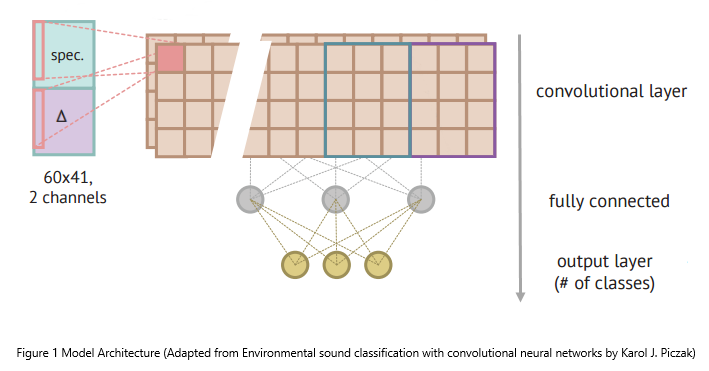

In part one, we learnt to extract various hand-crafted features from audio clips. We, also, trained a simple feedforward neural network to classify each sound into a predefined category. Today, we will go one step further and see how we can apply Convolution Neural Network (CNN) to perform the same task of urban sound classification.
Note: If you want to get in-depth understanding of how CNN works. Kindly consult following resources: [1], [2] and [3].
The well-known application of CNN is image classification, where a fixed dimension image is fed into a network along with different channels (RGB in the case of a color image) and after various transformation steps via application of convolution, pooling and fully connected layers, the network outputs class probabilities for the image. We want to do the same, but here instead of an image, we have sound clips. A quick search on Google Scholar provide a lot of research papers, which discuss the implementation of CNN for sound recognition. A paper I found particularly interesting and quite relevant is Environmental sound classification with convolutional neural networks by Karol J. Piczak. I borrowed the idea of dataset preparation (i.e. feature extraction) for CNN from this paper. For example: how to get equal size segments from varying length audio clips and which audio feature(s) we can feed as a separate channel (just like RGB of a color image) into the network. Once we have the initial pre-processed dataset ready, we can train a deep convolutional network (composed of different layers) as we want!
Let's define a function to calculate log scaled mel-spectrograms and their corresponding deltas from a sound clip. Regarding fixed size input, we will divide each sound clip into segments of 60x41 (60 rows and 41 columns). The mel-spec and their deltas will become two channels, which we will fed into the CNN. Other features can be calculated in the same way, which can be used as an additional (separate) input channel.

### Load necessary libraries ###
import glob
import os
import librosa
import numpy as np
from sklearn.model_selection import KFold
from sklearn.metrics import accuracy_score
import tensorflow as tf
from tensorflow import keras
### Define helper functions ###
def extract_features(parent_dir,sub_dirs,file_ext="*.wav",
bands=60,frames=41):
def _windows(data, window_size):
start = 0
while start < len(data):
yield int(start), int(start + window_size)
start += (window_size // 2)
window_size = 512 * (frames - 1)
features, labels = [], []
for fn in glob.glob(os.path.join(parent_dir, sub_dir, file_ext)):
segment_log_specgrams, segment_labels = [], []
sound_clip,sr = librosa.load(fn)
label = int(fn.split('/')[2].split('-')[1])
for (start,end) in _windows(sound_clip,window_size):
if(len(sound_clip[start:end]) == window_size):
signal = sound_clip[start:end]
melspec = librosa.feature.melspectrogram(signal,n_mels=bands)
logspec = librosa.amplitude_to_db(melspec)
logspec = logspec.T.flatten()[:, np.newaxis].T
segment_log_specgrams.append(logspec)
segment_labels.append(label)
segment_log_specgrams = np.asarray(segment_log_specgrams).reshape(
len(segment_log_specgrams),bands,frames,1)
segment_features = np.concatenate((segment_log_specgrams, np.zeros(
np.shape(segment_log_specgrams))), axis=3)
for i in range(len(segment_features)):
segment_features[i, :, :, 1] = librosa.feature.delta(
segment_features[i, :, :, 0])
if len(segment_features) > 0: # check for empty segments
features.append(segment_features)
labels.append(segment_labels)
return features, labels
extract_feature and windows are the two functions we need to prepare the data (both features and labels) for training CNN. extract_features iterates over all the files within subdirectories (folds), calculate above-mentioned features along with class labels and append them to arrays. Let's call this method to extract features and labels and save them as numpy array using numpy.savez.
# Pre-process and extract feature from the data
parent_dir = 'UrbanSounds8K/audio/'
save_dir = "UrbanSounds8K/processed/"
folds = sub_dirs = np.array(['fold1','fold2','fold3','fold4',
'fold5','fold6','fold7','fold8',
'fold9','fold10'])
for sub_dir in sub_dirs:
features, labels = extract_features(parent_dir,sub_dir)
np.savez("{0}{1}".format(save_dir, sub_dir),
features=features,
labels=labels)
Now we define a convolutional neural network with four layers each followed by batch normalization and max pooling, after the last convolutional layer we will add a global pooling to extract embedding which are further processed by a fully-connected layer. Lastly, a dense layer with softmax activation is added to output probabilities of the sound classes. We will use Adam optimizer to minimize a sparse categorical crossentropy objective for training the network.
### Define convolutional network architecture ###
def get_network():
num_filters = [24,32,64,128]
pool_size = (2, 2)
kernel_size = (3, 3)
input_shape = (60, 41, 2)
num_classes = 10
keras.backend.clear_session()
model = keras.models.Sequential()
model.add(keras.layers.Conv2D(24, kernel_size,
padding="same", input_shape=input_shape))
model.add(keras.layers.BatchNormalization())
model.add(keras.layers.Activation("relu"))
model.add(keras.layers.MaxPooling2D(pool_size=pool_size))
model.add(keras.layers.Conv2D(32, kernel_size,
padding="same"))
model.add(keras.layers.BatchNormalization())
model.add(keras.layers.Activation("relu"))
model.add(keras.layers.MaxPooling2D(pool_size=pool_size))
model.add(keras.layers.Conv2D(64, kernel_size,
padding="same"))
model.add(keras.layers.BatchNormalization())
model.add(keras.layers.Activation("relu"))
model.add(keras.layers.MaxPooling2D(pool_size=pool_size))
model.add(keras.layers.Conv2D(128, kernel_size,
padding="same"))
model.add(keras.layers.BatchNormalization())
model.add(keras.layers.Activation("relu"))
model.add(keras.layers.GlobalMaxPooling2D())
model.add(keras.layers.Dense(128, activation="relu"))
model.add(keras.layers.Dense(num_classes, activation="softmax"))
model.compile(optimizer=keras.optimizers.Adam(1e-4),
loss=keras.losses.SparseCategoricalCrossentropy(),
metrics=["accuracy"])
return model
The next step is to train and evaluate the network with 10-folds cross-validation. During evaluation on the test sound clips, we will average the predictions over all segments of the audio as clips could be of varying length. Lastly, we will average the the accuracies of all the ten folds to get an estimation of network performance.
### Train and evaluate via 10-Folds cross-validation ###
accuracies = []
folds = np.array(['fold1','fold2','fold3','fold4',
'fold5','fold6','fold7','fold8',
'fold9','fold10'])
load_dir = "UrbanSounds8K/processed/"
kf = KFold(n_splits=10)
for train_index, test_index in kf.split(folds):
x_train, y_train = [], []
for ind in train_index:
# read features or segments of an audio file
train_data = np.load("{0}/{1}.npz".format(load_dir,folds[ind]),
allow_pickle=True)
# for training stack all the segments so that they are treated as an example/instance
features = np.concatenate(train_data["features"], axis=0)
labels = np.concatenate(train_data["labels"], axis=0)
x_train.append(features)
y_train.append(labels)
# stack x,y pairs of all training folds
x_train = np.concatenate(x_train, axis = 0).astype(np.float32)
y_train = np.concatenate(y_train, axis = 0).astype(np.float32)
# for testing we will make predictions on each segment and average them to
# produce signle label for an entire sound clip.
test_data = np.load("{0}/{1}.npz".format(load_dir,
folds[test_index][0]), allow_pickle=True)
x_test = test_data["features"]
y_test = test_data["labels"]
model = get_network()
model.fit(x_train, y_train, epochs = 50, batch_size = 24, verbose = 0)
# evaluate on test set/fold
y_true, y_pred = [], []
for x, y in zip(x_test, y_test):
# average predictions over segments of a sound clip
avg_p = np.argmax(np.mean(model.predict(x), axis = 0))
y_pred.append(avg_p)
# pick single label via np.unique for a sound clip
y_true.append(np.unique(y)[0])
accuracies.append(accuracy_score(y_true, y_pred))
print("Average 10 Folds Accuracy: {0}".format(np.mean(accuracies)))
This blog post discussed a strategy for preparing a sound dataset for learning deep convolutional network to recognize daily-life sounds . I would encourage you to experiement with the network architecture through and train the network for several epochs to improve recognition. If you have any question or feedback, please comment below.
The python notebook is available at the following link.